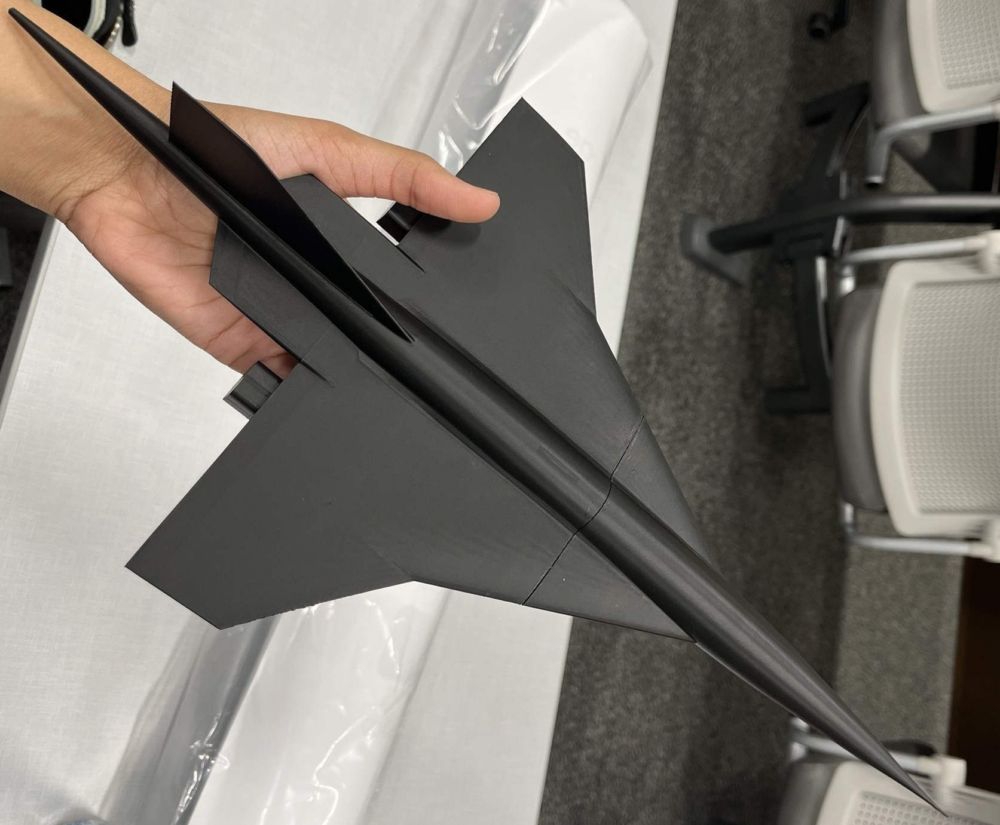
Conceptual Design of Supersonic Business Jet
Aerodynamics & aerothermodynamics lead for a Mach 1.7 SBJ concept.
Aerospace engineer focused on CFD, aircraft design, and computational optimization. I enjoy simulation-driven design iteration and building MATLAB/Python tools for fast engineering trade studies.
Quick stats and links

Aerodynamics & aerothermodynamics lead for a Mach 1.7 SBJ concept.
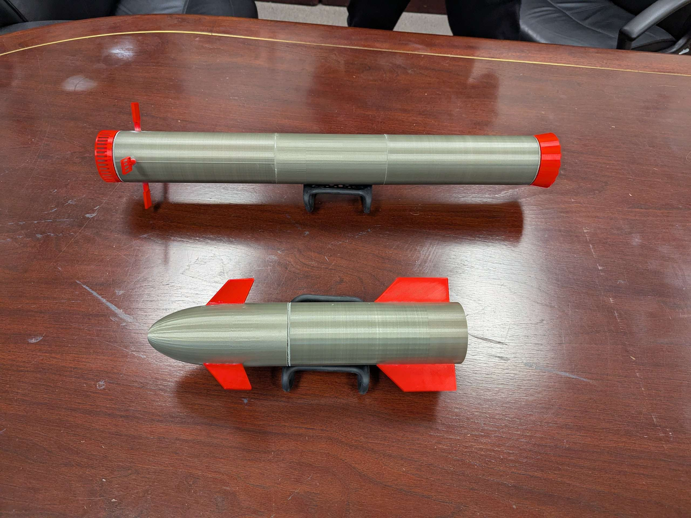
Performed aerodynamic and stability analysis of a Martian Starship concept, optimizing lift-to-drag and control margins.
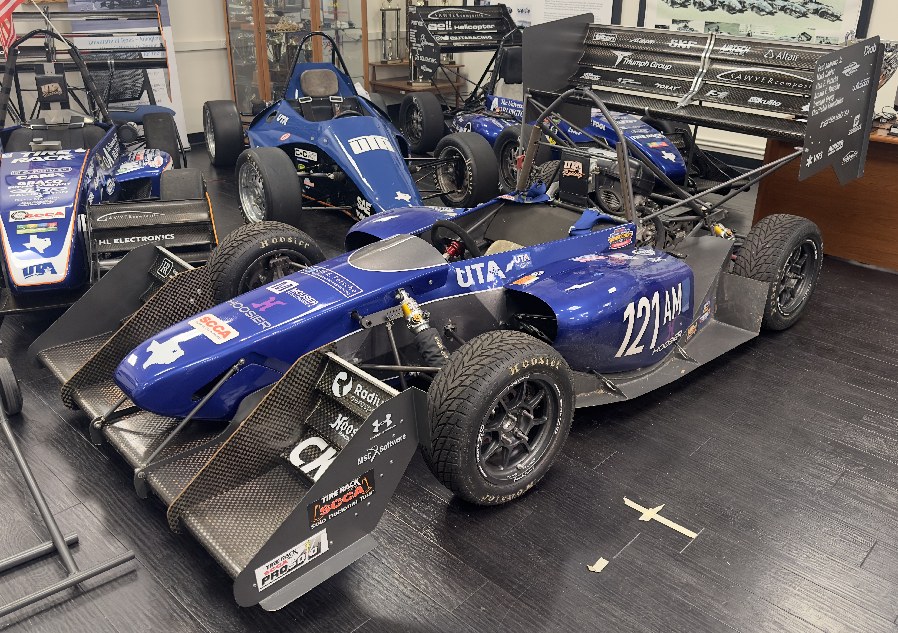
CFD-driven aero redesign of UTA Racing's A-modified car using STAR-CCM+ parametric sweeps on ride height and wing geometry.
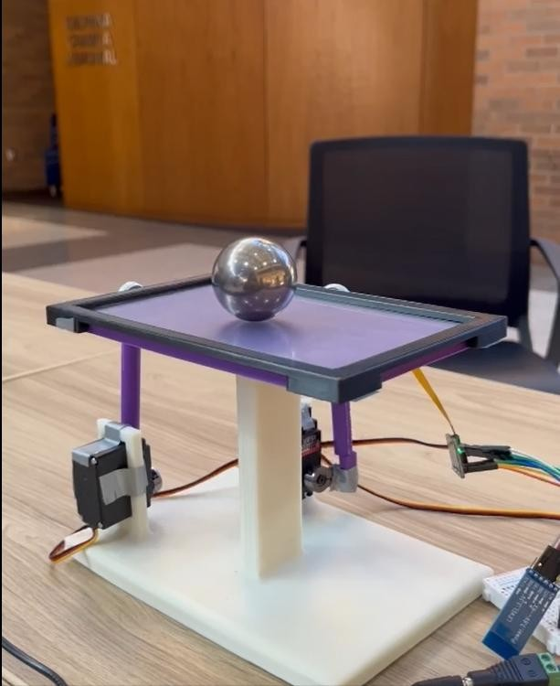
Designed a two-axis ball-balancing system using a Raspberry Pi Pico and resistive touchscreen with a real-time PID controller in C++
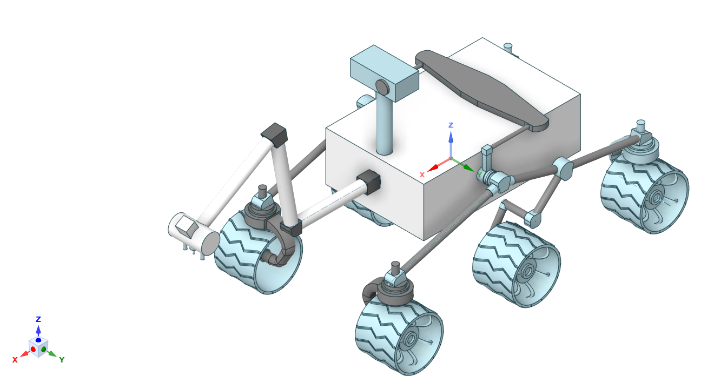
NASA workforce development program focused on end-to-end mission concept design through formal NASA review cycles.
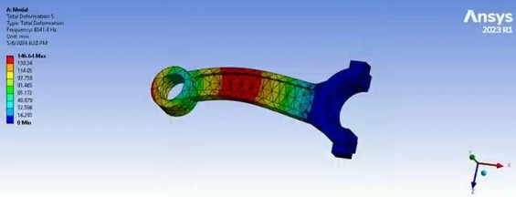
Experimental modal test + Ansys structural dynamics to extract natural frequencies and mode shapes, validating simulation with measured response.
UTA Honors College · Fall 2025 Honors Capstone
Honors thesis studying adaptive folding wingtips on a tailless supersonic business jet. Used MATLAB-based supersonic and compression-lift models to evaluate affects of wingtip droop angle.
Thesis →AIAA Region IV Student Conferences · 2025
First‑author. Transient aerospike nozzle flowfields with modal analysis for RDE applications.
DOI →AIAA Region IV Student Conferences · 2024
Co‑author. CFD and machine learning workflow for RDE aerospike nozzle design.
DOI →Focus: Aerodynamics, Design & Optimization
Research: Multi-fidelity surrogate modeling for aerodynamic design optimization
iDOPT Lab
Organizations: AIAA, Honors College Council, SASE, ACM.
Certification: Machine Learning Specialization (Stanford & DeepLearning.AI)
Test Foundations for Flight Test (AIAA)The SkyBreaker project focused on the conceptual and preliminary design of a Trans-Pacific Supersonic Business Jet (SSBJ) capable of nonstop flight from Los Angeles (LAX) to Tokyo (NRT) at Mach 1.7 using 100% Sustainable Aviation Fuel (SAF). The mission sought to balance speed, efficiency, environmental compliance, and comfort, all within the ICAO Chapter 14 noise standards and a maximum takeoff gross weight (TOGW) of approximately 100,000 lb (≈ 45,359 kg)
The team implemented a multidisciplinary conceptual design process consisting of:
The iterative design converged on a configuration featuring high aerodynamic efficiency (L/D ≈ 7–8), a Mach 2.1 design point, and feasible performance across all mission phases.

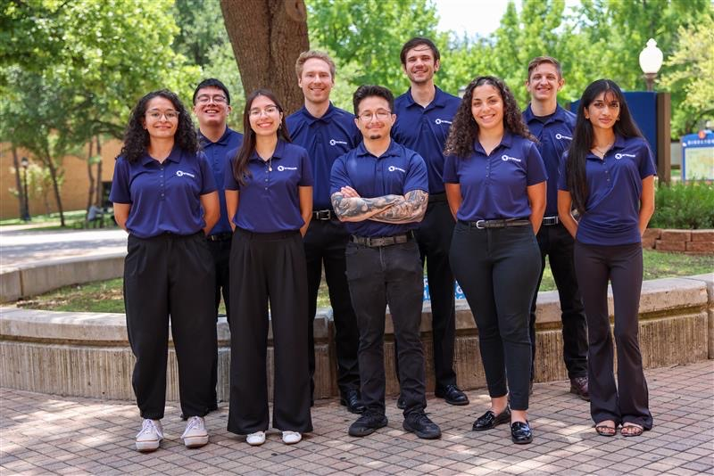
As the Aerodynamics & Aerothermodynamics Lead, and a secondary in Stability & Control, I was responsible for:
The SkyBreaker study produced a validated conceptual design that demonstrated both technical and environmental feasibility for future supersonic business travel. The integration of your aerodynamic modeling established a robust foundation for high-speed flight efficiency, shaping the project’s final configuration and performance envelope.

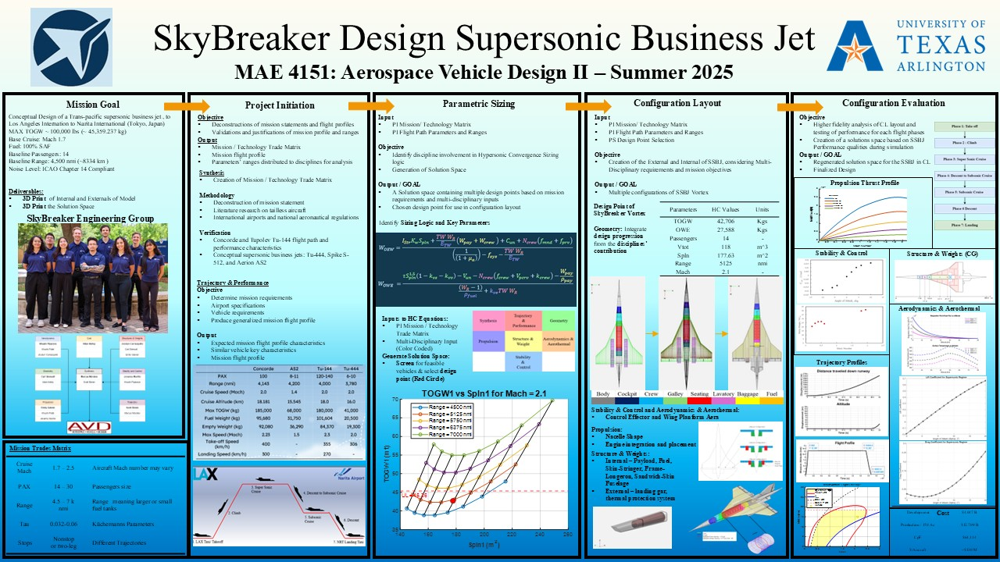
This project aimed to reverse-engineer and analyze SpaceX’s Starship for Martian and Earth re-entry conditions. The study focused on achieving high aerodynamic efficiency, controllability, and thermal protection performance during hypersonic descent through rarefied Martian atmosphere and dense Earth reentry flow. The redesigned configuration achieved an estimated lift-to-drag ratio (L/D) of 4–5 on Mars and >8 during Earth reentry, ensuring a smooth, stable descent profile.

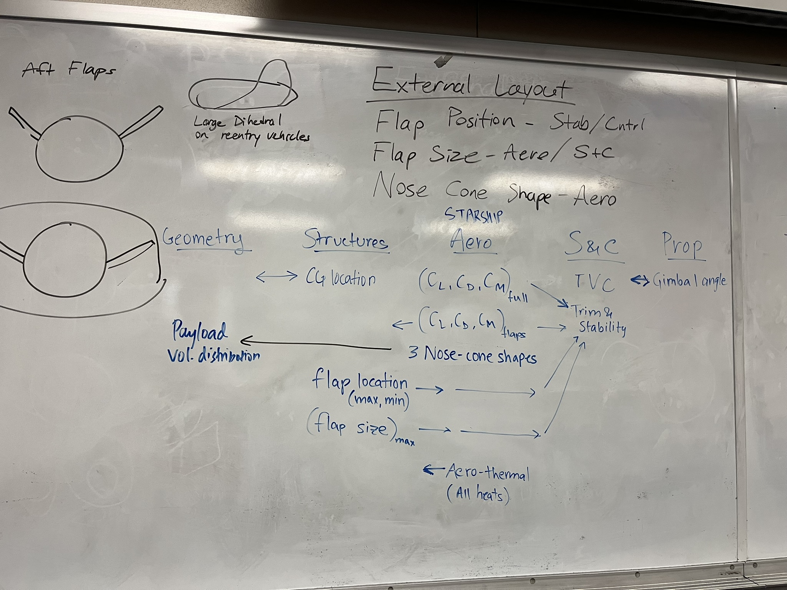
The team used OpenVSP for 3D modeling, MATLAB for creating an analytical model for aerodynamic coefficient prediction, and for flight performance and control margin calculations. Dynamic stability was analyzed through pitching moment derivatives and control surface sizing, while thermal considerations were informed by convective heating correlations. Analyses compared flight behavior in CO₂-rich Martian atmosphere (low Reynolds number, low density) with Earth’s high dynamic pressure regime, identifying fin and strake adjustments necessary to maintain longitudinal control.
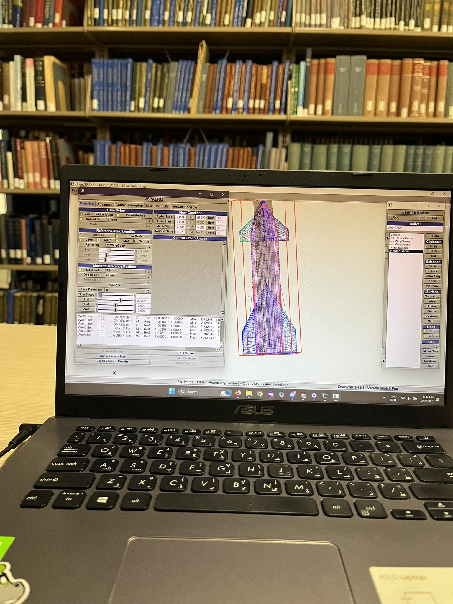
As lead for Aero & S&C, I coordinated geometry modifications, aerodynamic analysis, control-surface sizing, and final presentation. Collaborated with RedShift Dynamics team members responsible for structures, thermal systems, and systems integration.
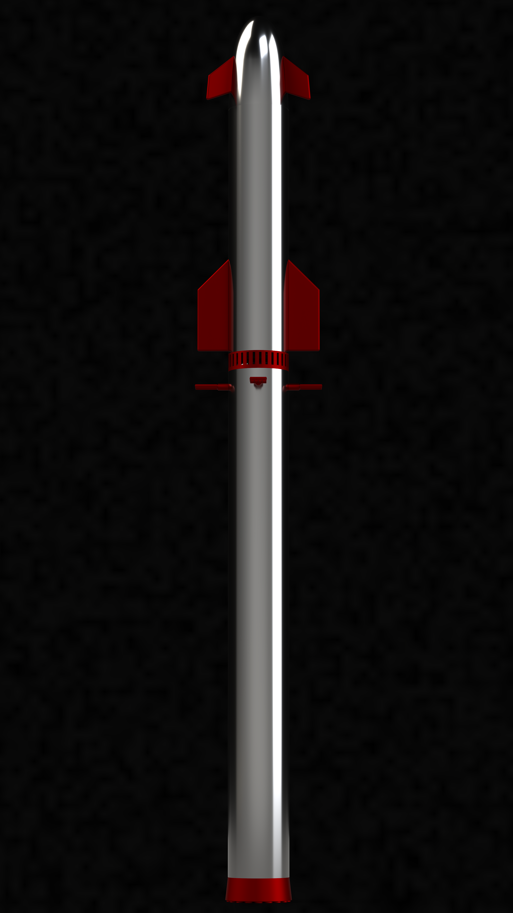
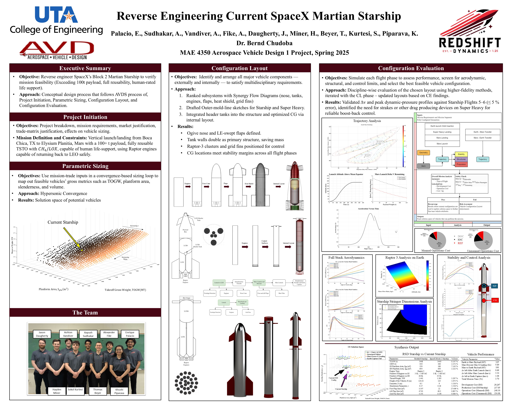
The redesign demonstrated that a refined Starship configuration could achieve the desired Martian glide ratio and control stability, supporting future interplanetary reentry vehicle studies. Recommendations included further CFD validation, material testing, and integration of reaction control system effects for precise descent control.
The A-MOD project focused on redesigning the aerodynamic package of UTA Racing’s A-Modified competition car. Using CFD-based trade studies in STAR-CCM+, the team evaluated how ride height, wing angle, and aero-component interactions affected downforce, drag, and overall balance. The goal was to improve cornering grip and stability without sacrificing straight-line efficiency.
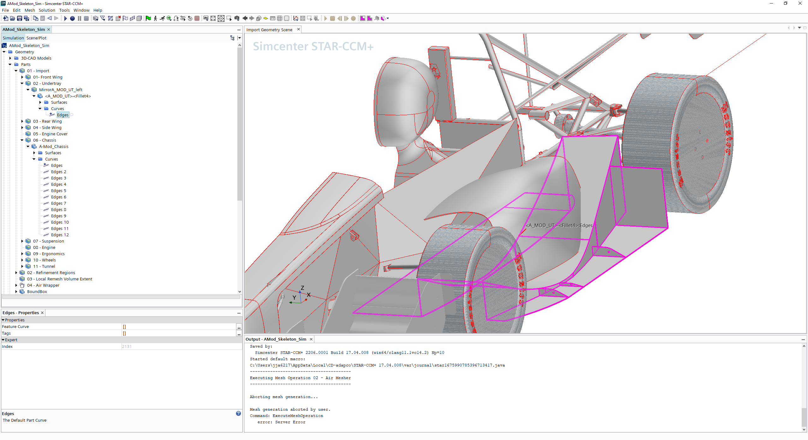

Developed a two-axis ball-balancing platform capable of maintaining a steel ball's position on a resistive touchscreen using a closed-loop PID control algorithm. The system utilized a Raspberry Pi Pico microcontroller for real-time processing and two servo motors to control the platform’s tilt. The project demonstrated principles of real-time feedback, signal acquisition, and precision mechatronic actuation.
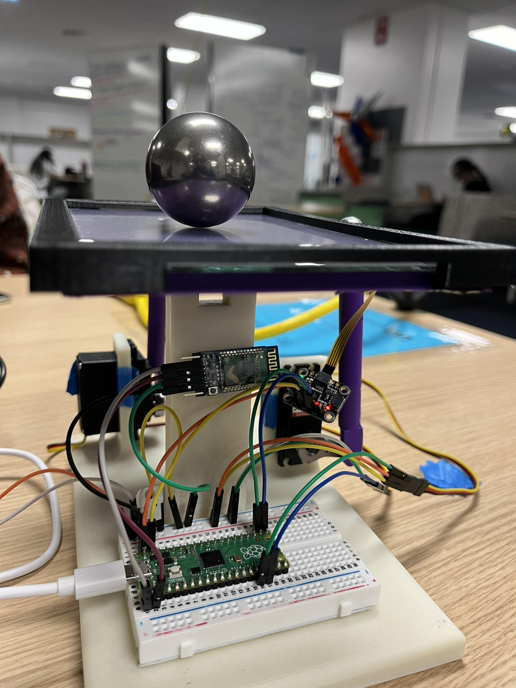
NASA’s L’SPACE Mission Concept Academy is a competitive workforce development program designed to train students in the engineering practices used on real NASA flight missions. Over a 12-week period, our multidisciplinary team developed a complete space mission concept following NASA’s formal systems engineering lifecycle, culminating in a Preliminary Design Review (PDR).
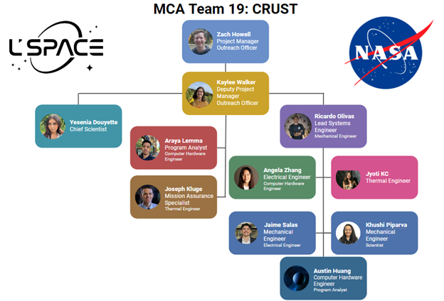
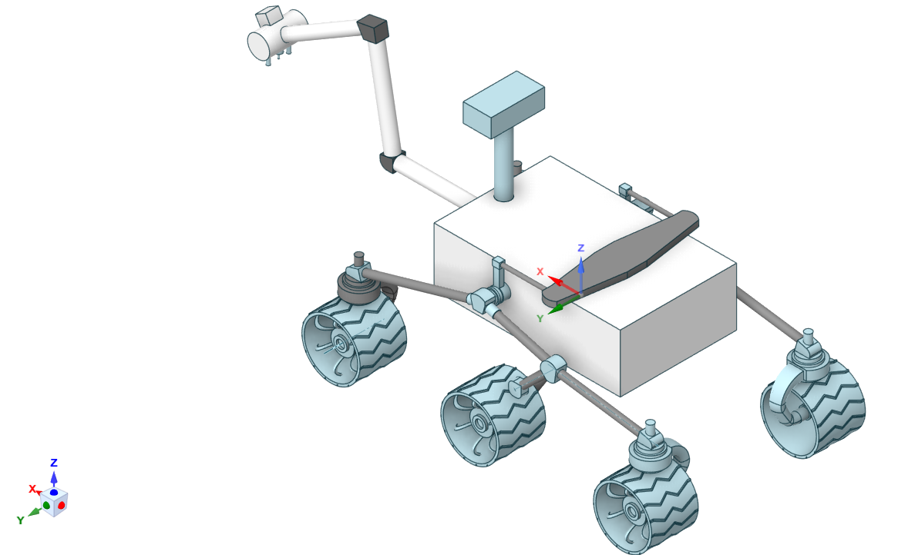
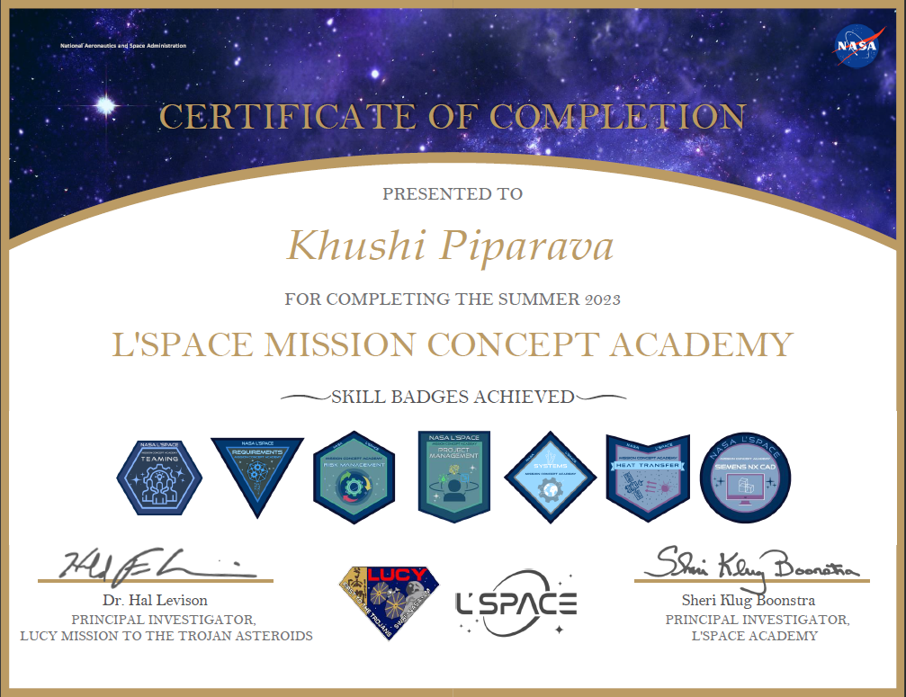
This project investigated the dynamic behavior of a forged 4340 steel piston rodfrom a Toyota 1.8L engine using both experimental modal testing and finite element modal analysis. The objective was to extract the rod’s natural frequencies and mode shapes, then validate the simulation against measured resonance peaks to quantify modeling accuracy.
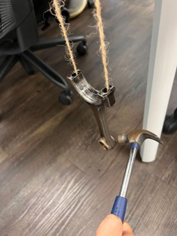
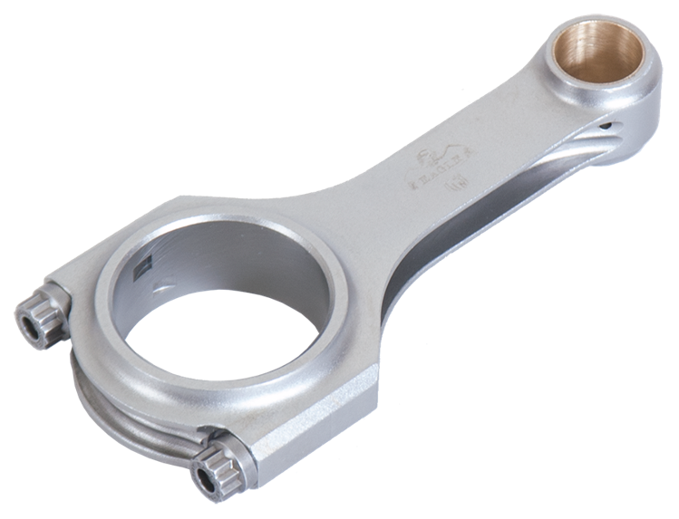
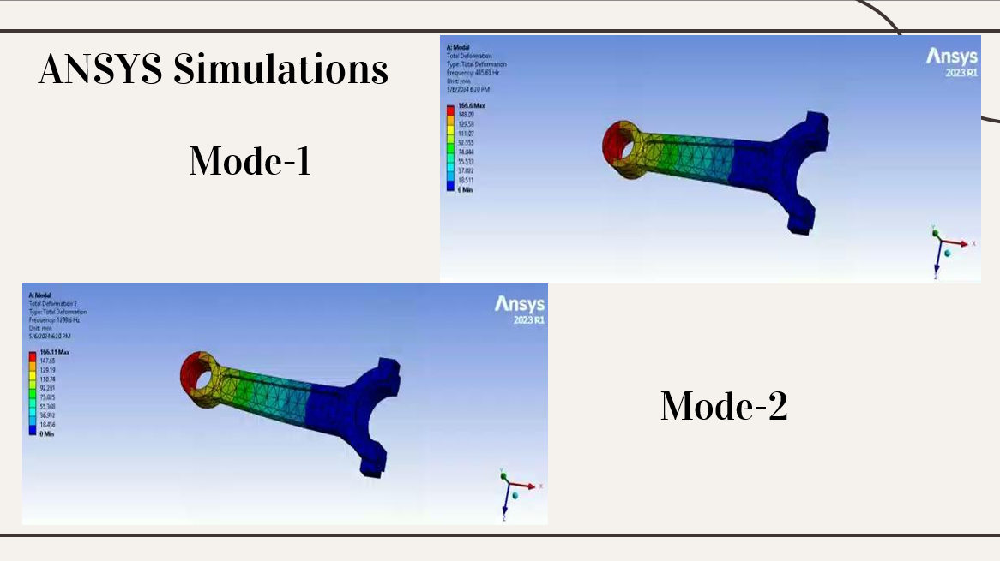
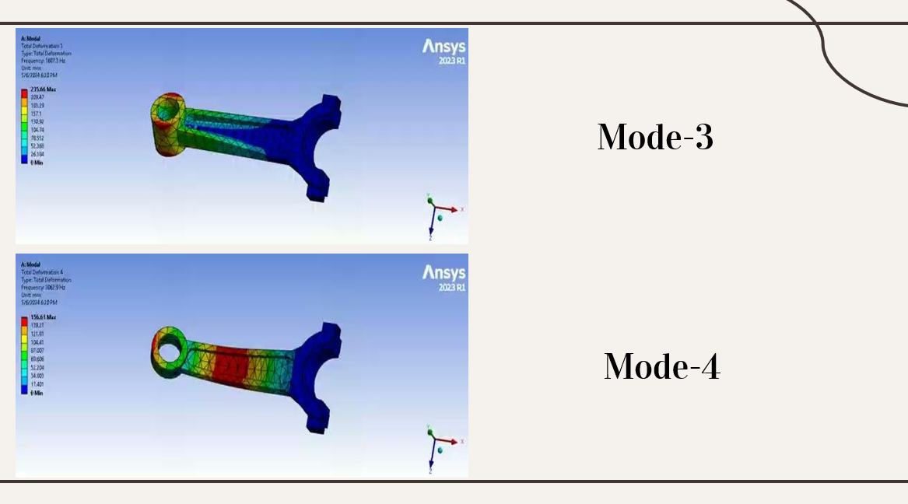
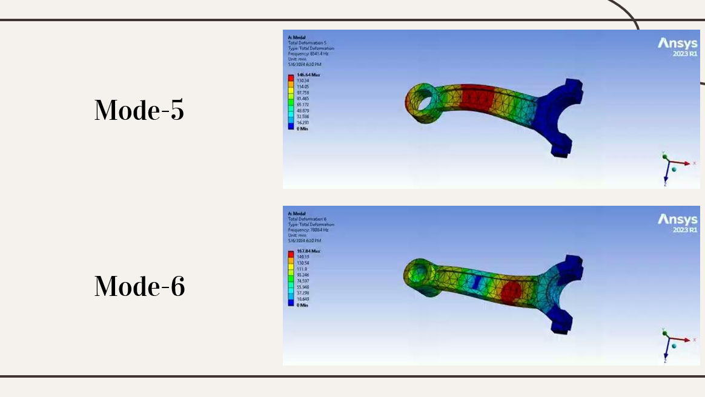
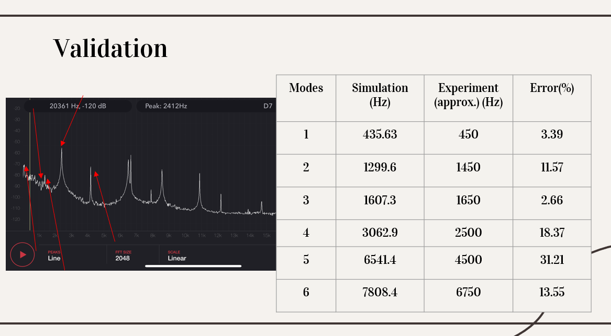